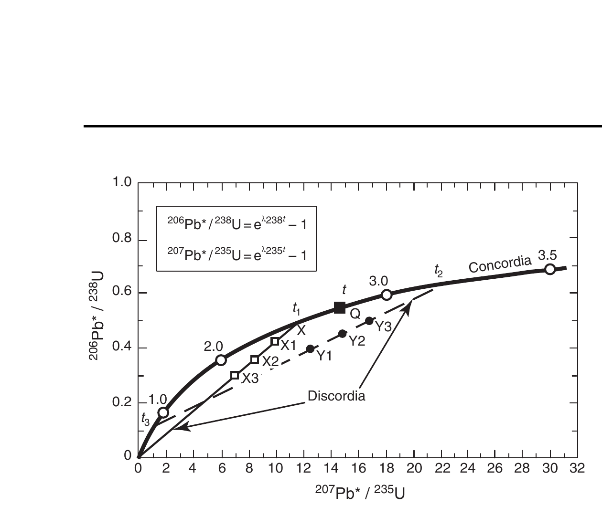
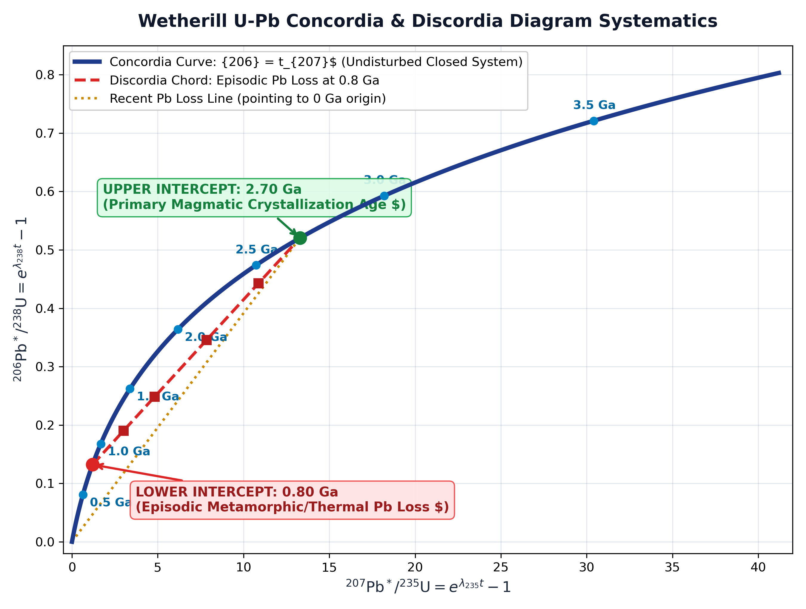
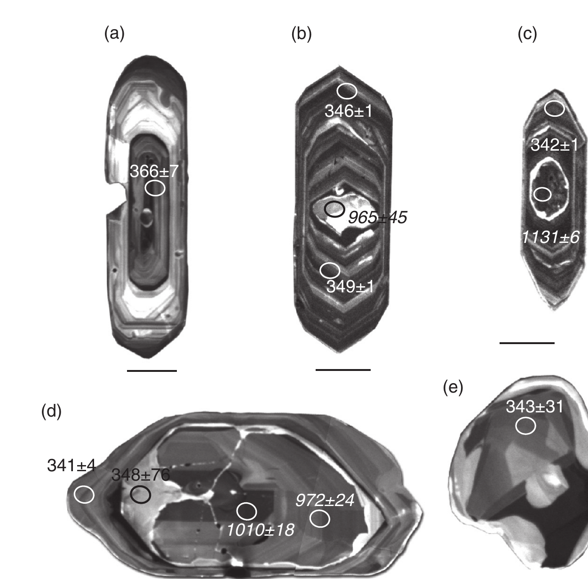

<!DOCTYPE html>
<html lang="en">
<head>
<meta charset="UTF-8">
<meta name="viewport" content="width=device-width, initial-scale=1.0">
<title>Q.23 – U-Pb Geochronology: Concordia, Discordia & Zircon Dating | DGMS 2019 Masterclass Guide</title>

<!-- Fonts & MathJax Configuration -->
<link rel="preconnect" href="https://fonts.googleapis.com">
<link rel="preconnect" href="https://fonts.gstatic.com" crossorigin>
<link href="https://fonts.googleapis.com/css2?family=Fira+Code:wght@400;500;600&family=Inter:wght@400;500;600;700;800&display=swap" rel="stylesheet">
<script>
window.MathJax = {
  tex: {
    inlineMath: [["$", "$"], ["\\(", "\\)"]],
    displayMath: [["$$", "$$"], ["\\[", "\\]"]]
  },
  svg: { fontCache: "global" }
};
</script>
<script type="text/javascript" id="MathJax-script" async
  src="https://cdn.jsdelivr.net/npm/mathjax@3/es5/tex-mml-chtml.js">
</script>

<style>
  /* ── Base & Reset ── */
  *, *::before, *::after { box-sizing: border-box; margin: 0; padding: 0; }
  body {
    font-family: "Inter", "Segoe UI", -apple-system, BlinkMacSystemFont, Roboto, sans-serif;
    background: #f8fafc;
    color: #0f172a;
    line-height: 1.65;
    padding: 24px 16px;
  }
  .page { max-width: 960px; margin: 0 auto; }

  /* ── Print / PDF Optimization ── */
  @page {
    size: A4;
    margin: 12mm 12mm;
  }
  @media print {
    body { background: #fff; padding: 0; }
    h1, h2, h3, h4 { break-after: avoid; page-break-after: avoid; }
    .option, .diagram-wrap, .quote-box, .formula-card, table, tr, .tb-figure, .highlight-box {
      page-break-inside: avoid;
      break-inside: avoid;
    }
    .part-banner {
      break-before: page;
      page-break-before: always;
    }
    .first-part {
      break-before: avoid !important;
      page-break-before: avoid !important;
    }
  }

  /* ── Header ── */
  .header {
    background: linear-gradient(135deg, #0f172a 0%, #1e293b 50%, #334155 100%);
    color: #fff;
    border-radius: 12px;
    padding: 26px 30px;
    margin-bottom: 22px;
    box-shadow: 0 4px 14px rgba(0,0,0,0.12);
  }
  .header .badge {
    display: inline-block;
    background: #0d9488;
    color: #fff;
    font-size: 11px;
    font-weight: 700;
    letter-spacing: 1px;
    text-transform: uppercase;
    border-radius: 4px;
    padding: 3px 10px;
    margin-bottom: 10px;
  }
  .header h1 { font-size: 22px; font-weight: 800; line-height: 1.35; letter-spacing: -0.3px; }
  .header .meta { font-size: 13px; color: #94a3b8; margin-top: 8px; font-weight: 500; }

  /* ── Part Banners ── */
  .part-banner {
    background: linear-gradient(135deg, #1e3a8a 0%, #2563eb 100%);
    color: #fff;
    border-radius: 10px;
    padding: 16px 22px;
    margin: 28px 0 20px 0;
    display: flex;
    align-items: center;
    gap: 14px;
    box-shadow: 0 3px 10px rgba(37, 99, 235, 0.2);
  }
  .first-part {
    margin-top: 10px;
  }
  .part-banner.green {
    background: linear-gradient(135deg, #065f46 0%, #059669 100%);
    box-shadow: 0 3px 10px rgba(5, 150, 105, 0.2);
  }
  .part-banner.purple {
    background: linear-gradient(135deg, #581c87 0%, #7c3aed 100%);
    box-shadow: 0 3px 10px rgba(124, 58, 237, 0.2);
  }
  .part-banner .part-num {
    font-size: 26px;
    font-weight: 800;
    opacity: 0.95;
    border-right: 2px solid rgba(255,255,255,0.3);
    padding-right: 14px;
    line-height: 1;
  }
  .part-banner .part-title {
    font-size: 16.5px;
    font-weight: 700;
    letter-spacing: 0.3px;
  }
  .part-banner .part-sub {
    font-size: 12px;
    opacity: 0.9;
    margin-top: 2px;
  }

  /* ── Answer Banner ── */
  .answer-banner {
    background: linear-gradient(90deg, #059669 0%, #10b981 100%);
    color: #fff;
    border-radius: 10px;
    padding: 16px 22px;
    margin-bottom: 20px;
    display: flex;
    align-items: center;
    gap: 16px;
    box-shadow: 0 3px 10px rgba(16, 185, 129, 0.2);
  }
  .answer-banner .tick { font-size: 32px; line-height: 1; font-weight: bold; }
  .answer-banner .text { font-size: 18px; font-weight: 700; }
  .answer-banner .sub { font-size: 13px; opacity: 0.95; margin-top: 3px; }

  /* ── Section Cards ── */
  .card {
    background: #fff;
    border: 1px solid #e2e8f0;
    border-radius: 10px;
    padding: 22px 24px;
    margin-bottom: 20px;
    box-shadow: 0 1px 3px rgba(0,0,0,0.05);
  }
  .card h2 {
    font-size: 16px;
    font-weight: 700;
    color: #1e293b;
    border-bottom: 2px solid #e2e8f0;
    padding-bottom: 8px;
    margin-bottom: 14px;
    display: flex;
    align-items: center;
    gap: 8px;
  }
  .card h3 {
    font-size: 14px;
    font-weight: 700;
    color: #334155;
    margin: 14px 0 6px 0;
  }
  p { margin-bottom: 11px; font-size: 13.5px; color: #1e293b; }

  /* ── Highlight & Quote Boxes ── */
  .highlight-box {
    background: #f8fafc;
    border-left: 4px solid #0d9488;
    border-radius: 0 8px 8px 0;
    padding: 12px 16px;
    margin: 12px 0;
    font-size: 13px;
    color: #0f172a;
  }
  .quote-box {
    background: #f0fdfa;
    border-left: 4px solid #14b8a6;
    border-radius: 0 8px 8px 0;
    padding: 14px 18px;
    margin: 14px 0;
    font-style: italic;
    font-size: 13px;
    color: #134e4a;
    line-height: 1.6;
  }
  .quote-box .citation {
    font-style: normal;
    font-weight: 700;
    color: #0d9488;
    margin-top: 6px;
    font-size: 11.5px;
  }

  /* ── Formula Cards ── */
  .formula-card {
    background: linear-gradient(135deg, #1e293b, #0f172a);
    color: #f8fafc;
    border-radius: 8px;
    padding: 15px 18px;
    margin: 14px 0;
    font-family: "Fira Code", "Consolas", monospace;
    font-size: 13px;
    border-left: 4px solid #38bdf8;
    line-height: 1.7;
  }
  .formula-card .title {
    font-family: "Inter", sans-serif;
    font-weight: 700;
    color: #38bdf8;
    margin-bottom: 8px;
    font-size: 12px;
    text-transform: uppercase;
    letter-spacing: 0.6px;
  }
  .formula-card .math-line {
    margin: 4px 0;
    color: #e2e8f0;
  }

  /* ── Textbook Figures ── */
  .tb-figure {
    background: #ffffff;
    border: 1px solid #cbd5e1;
    border-radius: 10px;
    padding: 14px;
    margin: 18px 0;
    text-align: center;
    box-shadow: 0 2px 8px rgba(0,0,0,0.06);
  }
  .tb-figure img {
    max-width: 100%;
    height: auto;
    border-radius: 6px;
    display: block;
    margin: 0 auto 12px auto;
    max-height: 480px;
    object-fit: contain;
  }
  .tb-figure .caption {
    font-size: 12px;
    color: #334155;
    text-align: left;
    border-top: 1px solid #e2e8f0;
    padding-top: 10px;
    line-height: 1.5;
    background: #f8fafc;
    padding: 10px 14px;
    border-radius: 6px;
  }
  .tb-figure .caption strong { color: #0f172a; }

  /* ── Option Cards ── */
  .option {
    border: 1px solid #e2e8f0;
    border-radius: 8px;
    padding: 14px 16px;
    margin-bottom: 12px;
    background: #fff;
  }
  .option.correct {
    border-color: #10b981;
    background: #f0fdf4;
  }
  .option.incorrect {
    border-color: #f87171;
    background: #fef2f2;
  }
  .option-header {
    display: flex;
    align-items: center;
    gap: 10px;
    font-weight: 700;
    font-size: 14px;
    margin-bottom: 6px;
  }
  .option.correct .option-header { color: #065f46; }
  .option.incorrect .option-header { color: #991b1b; }
  .badge-tag {
    display: inline-block;
    padding: 2px 8px;
    border-radius: 4px;
    font-size: 11px;
    font-weight: 700;
    text-transform: uppercase;
  }
  .badge-correct { background: #dcfce7; color: #15803d; }
  .badge-incorrect { background: #fee2e2; color: #b91c1c; }

  /* ── Tables ── */
  table {
    width: 100%;
    border-collapse: collapse;
    font-size: 12.5px;
    margin: 14px 0;
  }
  th, td {
    border: 1px solid #cbd5e1;
    padding: 9px 12px;
    text-align: left;
    vertical-align: top;
  }
  th {
    background: #f1f5f9;
    font-weight: 700;
    color: #1e293b;
  }
  tr:nth-child(even) { background: #f8fafc; }

  /* ── Question Card ── */
  .question-box {
    background: #eff6ff;
    border: 2px solid #3b82f6;
    border-radius: 8px;
    padding: 16px 20px;
    margin-bottom: 18px;
  }
  .question-box .q-num {
    font-size: 12px;
    font-weight: 700;
    color: #1d4ed8;
    text-transform: uppercase;
    letter-spacing: 0.5px;
    margin-bottom: 4px;
  }
  .question-box .q-stmt {
    font-size: 15px;
    font-weight: 600;
    color: #0f172a;
    line-height: 1.5;
  }

  /* ── Practice Question Container ── */
  .practice-box {
    background: #faf5ff;
    border: 1px solid #d8b4fe;
    border-radius: 8px;
    padding: 14px 18px;
    margin-bottom: 14px;
  }
  .practice-box .p-title {
    font-weight: 700;
    color: #6b21a8;
    font-size: 13.5px;
    margin-bottom: 6px;
  }
  .practice-box .ans {
    background: #f3e8ff;
    border-radius: 6px;
    padding: 9px 13px;
    margin-top: 8px;
    font-size: 12.5px;
    color: #4c1d95;
    line-height: 1.55;
  }

  /* ── Footer ── */
  .footer {
    text-align: center;
    font-size: 12px;
    color: #64748b;
    margin-top: 32px;
    padding-top: 18px;
    border-top: 1px solid #cbd5e1;
    line-height: 1.6;
  }
</style>
</head>
<body>
<div class="page">

  <!-- ── HEADER ── -->
  <div class="header">
    <span class="badge">DGMS 2019 · Question 23 · Masterclass Guide</span>
    <h1>U-Pb Geochronology: Dual Decay Schemes, The Wetherill Concordia Curve & Discordia Intercept Dynamics</h1>
    <div class="meta">Comprehensive Geochronology Guide · Authoritative References: K. C. Misra (2012, Ch. 10, pp. 233–237) & William M. White (2005, Ch. 8, pp. 317–324, 338–345)</div>
  </div>

  <!-- ══════════════════════════════════════════════════════ -->
  <!-- PART I: THEORETICAL FOUNDATION & TEXTBOOK EXPOSÉ      -->
  <!-- ══════════════════════════════════════════════════════ -->
  <div class="part-banner first-part">
    <div class="part-num">I</div>
    <div>
      <div class="part-title">THEORETICAL FOUNDATION: THE COUPLED U-Pb CHRONOMETERS</div>
      <div class="part-sub">Dual Radiogenic Decay Schemes, Parametric Concordia Geometry, Episodic Lead Loss & Discordia Mathematics</div>
    </div>
  </div>

  <!-- CARD 1: THE DUAL DECAY SCHEMES -->
  <div class="card">
    <h2>1. The Dual Uranium-Lead Clocks in a Single Mineral</h2>
    <p>The Uranium-Lead (<strong>U-Pb</strong>) isotopic system is universally recognized as the <em>"gold standard"</em> of high-precision geochronology. Its supreme analytical power stems from the exceptional circumstance that nature provides <strong>two independent radioactive isotopes of the same parent element (Uranium) that decay to two distinct radiogenic isotopes of the same daughter element (Lead)</strong> with markedly different half-lives:</p>

    <div class="formula-card">
      <div class="title">Fundamental U-Pb Decay Equations & Half-Lives</div>
      <div class="math-line"><strong>Clock 1 (238-Uranium to 206-Lead):</strong></div>
      <div class="math-line">$$	ext{}^{238}	ext{U} \longrightarrow 	ext{}^{206}	ext{Pb} + 8\,lpha + 6\,eta^- + Q$$</div>
      <div class="math-line">• Decay Constant: $\lambda_{238} = 1.55125 	imes 10^{-10}	ext{ yr}^{-1}$ &nbsp;|&nbsp; Half-life: $t_{1/2} = 4.468	ext{ Ga}$ ($4468	ext{ Ma}$)</div>
      <div class="math-line">• Isochron/Ratio Form: $\left(rac{	ext{}^{206}	ext{Pb}^*}{	ext{}^{238}	ext{U}}
ight) = e^{\lambda_{238} t} - 1$ &nbsp;&nbsp;&nbsp;[Misra Eq. 10.22]</div>
      <br>
      <div class="math-line"><strong>Clock 2 (235-Uranium to 207-Lead):</strong></div>
      <div class="math-line">$$	ext{}^{235}	ext{U} \longrightarrow 	ext{}^{207}	ext{Pb} + 7\,lpha + 4\,eta^- + Q$$</div>
      <div class="math-line">• Decay Constant: $\lambda_{235} = 9.8485 	imes 10^{-10}	ext{ yr}^{-1}$ &nbsp;|&nbsp; Half-life: $t_{1/2} = 0.704	ext{ Ga}$ ($704	ext{ Ma}$)</div>
      <div class="math-line">• Isochron/Ratio Form: $\left(rac{	ext{}^{207}	ext{Pb}^*}{	ext{}^{235}	ext{U}}
ight) = e^{\lambda_{235} t} - 1$ &nbsp;&nbsp;&nbsp;[Misra Eq. 10.24]</div>
      <br>
      <div class="math-line"><em>Note:</em> $	ext{}^{206}	ext{Pb}^*$ and $	ext{}^{207}	ext{Pb}^*$ represent purely radiogenic lead atoms accumulated in-situ via radioactive decay since mineral crystallization. Present-day natural $	ext{}^{238}	ext{U}/	ext{}^{235}	ext{U}$ ratio is an invariant constant: $137.88$.</div>
    </div>

    <p>Because both uranium decay series proceed concurrently within the <strong>identical host mineral crystal lattice</strong> (predominantly <strong>zircon, $	ext{ZrSiO}_4$</strong>, as well as monazite, baddeleyite, and titanite), any mineral grain that has remained completely undisturbed (a closed chemical system to both $	ext{U}$ and $	ext{Pb}$) must yield <strong>strictly identical age determinations</strong> from both clocks:</p>

    <div class="highlight-box">
      <strong>The Fundamental Condition of Concordance:</strong><br>
      A sample is defined as <strong>concordant</strong> if and only if both independent chronometers satisfy:
      $$t_{206/	ext{U}} = t_{207/	ext{U}} = t_{	ext{crystallization}}$$
      If post-crystallization disturbances (metamorphism, thermal heating, or fluid leaching) alter the elemental ratio of $	ext{U}$ to $	ext{Pb}$, the two clocks yield conflicting ages ($t_{206/	ext{U}} 
eq t_{207/	ext{U}}$), producing a <strong>discordant</strong> system.
    </div>
  </div>

  <!-- CARD 2: PARAMETRIC CONCORDIA CURVE -->
  <div class="card">
    <h2>2. The Wetherill Concordia Curve: Geometric Locus of Concordant Ages</h2>
    <p>In 1956, geochemist George W. Wetherill devised an elegant graphical technique that overcomes the problem of post-crystallization lead loss. By plotting the two radiogenic daughter/parent ratios against one another on Cartesian coordinates:</p>
    <ul style="margin-left: 24px; font-size: 13.5px; margin-bottom: 12px;">
      <li><strong>Y-axis:</strong> Radiogenic Lead-206 to Uranium-238 ratio &nbsp;$\longrightarrow &nbsp; y(t) = rac{	ext{}^{206}	ext{Pb}^*}{	ext{}^{238}	ext{U}} = e^{\lambda_{238} t} - 1$</li>
      <li><strong>X-axis:</strong> Radiogenic Lead-207 to Uranium-235 ratio &nbsp;$\longrightarrow &nbsp; x(t) = rac{	ext{}^{207}	ext{Pb}^*}{	ext{}^{235}	ext{U}} = e^{\lambda_{235} t} - 1$</li>
    </ul>

    <div class="formula-card">
      <div class="title">Parametric Equation of the Concordia Curve</div>
      The <strong>Concordia curve</strong> is defined mathematically by the parametric vector:
      $$ec{C}(t) = egin{pmatrix} x(t) \ y(t) \end{pmatrix} = egin{pmatrix} e^{\lambda_{235} t} - 1 \ e^{\lambda_{238} t} - 1 \end{pmatrix}, \quad 0 \le t \le 4.55	ext{ Ga}$$
      Because $\lambda_{235} pprox 6.35 	imes \lambda_{238}$, $x(t)$ grows exponentially faster than $y(t)$, causing the Concordia curve to bend continuously with a concave-downward curvature starting at the origin $(0,0)$ at $t = 0$.
    </div>

    <div class="quote-box">
      "Wetherill (1956) devised a graphical method that has proved very useful in evaluating U-Pb data. The curve on this plot is called the <strong>concordia</strong>, and is the locus of all points for which the $	ext{}^{206}	ext{Pb}/	ext{}^{238}	ext{U}$ age equals the $	ext{}^{207}	ext{Pb}/	ext{}^{235}	ext{U}$ age. Any sample that has remained closed to U and Pb since crystallization will plot on the concordia curve at a position corresponding to its age."
      <div class="citation">— Kula C. Misra, <em>Introduction to Geochemistry: Principles and Applications</em> (2012), Chapter 10, p. 234.</div>
    </div>
  </div>

  <!-- CARD 3: TEXTBOOK FIGURES: MISRA FIG 10.7 & HD SCHEMATIC -->
  <div class="card">
    <h2>3. Authentic Textbook Evidence & Concordia-Discordia Geometry</h2>
    <p>Figure 1 reproduces the authentic textbook diagram from K. C. Misra (2012, Fig. 10.7), illustrating the geometry of the Concordia curve, a concordant zircon point $Q$, and Discordia lines resulting from lead loss:</p>

    <!-- FIGURE 1: MISRA TEXTBOOK FIG 10.7 -->
    <div class="tb-figure">
      
      <div class="caption">
        <strong>Figure 1 (Misra 2012, Fig. 10.7, p. 235):</strong> The Wetherill U–Pb Concordia diagram illustrating interpretations of lead isotopic data for uranium-bearing minerals such as zircon. The curved solid line is the <strong>Concordia</strong>—the locus of concordant points where $t_{206} = t_{207}$. Point $Q$ represents an undisturbed, concordant zircon. When zircons of age $t_1$ suffer modern lead loss or uranium gain, discordant samples ($X_1, X_2, X_3$) align along a straight Discordia passing through the origin. When zircons suffer episodic lead loss during an ancient thermal event ($t_3$), the straight Discordia intersects Concordia at an <strong>Upper Intercept ($t_2$, crystallization age)</strong> and a <strong>Lower Intercept ($t_3$, metamorphic disturbance age)</strong>.
      </div>
    </div>

    <!-- FIGURE 2: HD VECTOR SCHEMATIC -->
    <div class="tb-figure">
      
      <div class="caption">
        <strong>Figure 2 (High-Resolution Vector Synthesis):</strong> Mathematical systematics of the Wetherill Concordia curve and Discordia chords. The blue curve represents the Concordia locus parameterized from $0$ to $3.8	ext{ Ga}$. An igneous rock crystallizing at $2.70	ext{ Ga}$ starts on Concordia at the green Upper Intercept. If subjected to a regional thermal or orogenic pulse at $0.80	ext{ Ga}$, incompatible radiogenic lead ($	ext{Pb}^{2+}$) is expelled in variable proportions from individual zircon grains, causing discordant samples (red squares) to align strictly along the linear red dashed <strong>Discordia chord</strong>.
      </div>
    </div>
  </div>

  <!-- CARD 4: DISCORDIA CHORDS & MECHANISMS OF LEAD LOSS -->
  <div class="card">
    <h2>4. Physical Causes of Discordance & The Mathematics of Discordia Chords</h2>
    <p>When an igneous body cools, its accessory zircons begin their isotopic evolution at time $t_1$ at a specific coordinate $(x_1, y_1)$ on the Concordia curve. If open-system behavior occurs at a subsequent time $t_2$, a linear array—the <strong>Discordia line</strong>—is produced:</p>

    <div class="highlight-box">
      <strong>Physical Drivers of Open-System Lead Loss in Zircon Crystals:</strong>
      <ol style="margin-left: 20px; margin-top: 6px;">
        <li><strong>Alpha-Decay Recoil Damage (Metamictization):</strong> As uranium and thorium atoms decay, high-energy alpha particles and massive recoiling daughter nuclei break structural $	ext{Zr–O}$ and $	ext{Si–O}$ bonds. Over hundreds of millions of years, accumulated radiation damage converts the rigid crystalline lattice into an amorphous, porous glass (the <em>metamict state</em>).</li>
        <li><strong>Episodic Thermal Resetting:</strong> During a later metamorphic, magmatic, or hydrothermal heating event at time $t_2$, thermal kinetic energy drives radiogenic lead ($	ext{Pb}^{2+}$, an incompatible divalent ion in the tetravalent $	ext{Zr}^{4+}$ crystal lattice) out of the metamict zones into circulating intergranular metamorphic fluids.</li>
        <li><strong>Continuous Diffusion vs. Recent Surface Weathering:</strong> If lead loss occurs continuously by volume diffusion, or during modern weathering in near-surface groundwater, the Discordia line points directly toward the origin ($t_2 pprox 0	ext{ Ma}$).</li>
      </ol>
    </div>

    <div class="formula-card">
      <div class="title">Linear Mixing Equation of the Discordia Chord</div>
      If a zircon grain of age $t_1$ loses a fraction $f$ of its accumulated radiogenic lead during an episodic event at time $t_2$, its remaining lead is a binary mixture of two components:
      $$egin{pmatrix} x \ y \end{pmatrix}_{	ext{observed}} = (1 - f) egin{pmatrix} x(t_1) \ y(t_1) \end{pmatrix} + f egin{pmatrix} x(t_2) \ y(t_2) \end{pmatrix}$$
      Because $f$ varies from grain to grain (depending on crystal size, uranium concentration, and crack density), a suite of cogenetic zircon crystals defines a <strong>straight line (chord) in Cartesian space</strong> connecting $(x(t_2), y(t_2))$ to $(x(t_1), y(t_1))$.
      <br><br>
      • <strong>Upper Intercept:</strong> Yields the true, undisturbed <strong>magmatic crystallization age ($t_1$)</strong>.<br>
      • <strong>Lower Intercept:</strong> Yields the precise age of the <strong>thermal or metamorphic lead-loss event ($t_2$)</strong>.
    </div>

    <div class="quote-box">
      "Because lead is lost in varying proportions from different zircon grains or zones, a suite of cogenetic discordant zircons defines a linear array—the <strong>discordia chord</strong>. The upper intercept with concordia dates the original crystallization of the magma, while the lower intercept dates the episodic lead loss event."
      <div class="citation">— William M. White, <em>Geochemistry</em> (2005), Chapter 8, p. 320.</div>
    </div>
  </div>

  <!-- CARD 5: ZIRCON MICRO-TEXTURES & TEXTBOOK FIG 10.6 -->
  <div class="card">
    <h2>5. Zircon Crystal Chemistry & Micro-Domain Dating (CL Imaging)</h2>
    <p>Why is zircon ($	ext{ZrSiO}_4$) the premier geochronometer of geology? The explanation lies in mineral crystal chemistry and lattice site dimensions:</p>
    <ul style="margin-left: 22px; font-size: 13.5px; margin-bottom: 12px;">
      <li><strong>Uranium Acceptance:</strong> In the zircon lattice, zirconium exists as $	ext{Zr}^{4+}$ with an ionic radius of $0.84	ext{ \AA}$ (8-fold coordination). Uranium ($	ext{U}^{4+}$, ionic radius $1.00	ext{ \AA}$) has the same charge and very similar size, readily substituting into the crystal lattice (up to several thousand ppm $	ext{U}$).</li>
      <li><strong>Initial Lead Rejection:</strong> Common lead in magmas exists as divalent $	ext{Pb}^{2+}$ with an enormous ionic radius ($1.29	ext{ \AA}$) and disparate charge. As a result, $	ext{Pb}^{2+}$ is strictly excluded during zircon crystallization. Consequently, freshly crystallized zircon contains <strong>virtually zero initial common lead ($[	ext{Pb}]_{	ext{initial}} pprox 0$)</strong>, meaning that all measured lead is radiogenic.</li>
      <li><strong>High Closure Temperature:</strong> Zircon boasts an exceptionally high closure temperature ($T_c > 900^\circ	ext{C}$), allowing it to retain isotopic memory through high-grade amphibolite and granulite facies metamorphism.</li>
    </ul>

    <!-- FIGURE 3: MISRA TEXTBOOK FIG 10.6 -->
    <div class="tb-figure">
      
      <div class="caption">
        <strong>Figure 3 (Misra 2012, Fig. 10.6, p. 234):</strong> Cathodoluminescence (CL) images of zoned zircon crystals revealing complex internal growth histories with spot radiometric dates obtained via high-resolution ion microprobe (SHRIMP-RG).
        <br>• <strong>(a)</strong> Magmatic zircon displaying fine oscillatory growth zoning ($346 \pm 1	ext{ Ma}$).
        <br>• <strong>(b & c)</strong> Magmatic zircons containing ancient inherited xenocrystic cores ($965$–$1131	ext{ Ma}$) surrounded by younger magmatic overgrowth rims ($342$–$349	ext{ Ma}$).
        <br>• <strong>(d)</strong> Detrital zircon with older core ($972$–$1010	ext{ Ma}$) and concentric metamorphic rim ($348	ext{ Ma}$).
        <br>• <strong>(e)</strong> "Soccerball" metamorphic zircon exhibiting diagnostic sector zoning ($343 \pm 31	ext{ Ma}$).
      </div>
    </div>
  </div>

  <!-- CARD 6: WETHERILL VS TERA-WASSERBURG VS EXAM NOTATION -->
  <div class="card">
    <h2>6. Coordinate Systems & Analysis of the DGMS Exam Phrasing</h2>
    <p>Candidates must understand the three distinct coordinate representations of Concordia and why the answer to the exam question is unequivocal:</p>

    <table>
      <thead>
        <tr>
          <th>Concordia Diagram Type</th>
          <th>Y-Axis Coordinate</th>
          <th>X-Axis Coordinate</th>
          <th>Primary Advantages & Practical Application</th>
        </tr>
      </thead>
      <tbody>
        <tr>
          <td><strong>Classical Wetherill (1956)</strong></td>
          <td>$	ext{}^{206}	ext{Pb}^* / 	ext{}^{238}	ext{U}$</td>
          <td>$	ext{}^{207}	ext{Pb}^* / 	ext{}^{235}	ext{U}$</td>
          <td>Standard for ancient rocks ($>1	ext{ Ga}$). Visualizes linear Discordia chords with upper/lower intercepts.</td>
        </tr>
        <tr>
          <td><strong>Tera-Wasserburg (1972)</strong></td>
          <td>$	ext{}^{207}	ext{Pb}^* / 	ext{}^{206}	ext{Pb}^*$</td>
          <td>$	ext{}^{238}	ext{U} / 	ext{}^{206}	ext{Pb}^*$</td>
          <td>Inverse Concordia plot widely used in modern microbeam dating (SHRIMP / LA-ICP-MS) of young zircons; requires no common-lead correction.</td>
        </tr>
        <tr>
          <td><strong>DGMS 2019 Exam Phrasing</strong></td>
          <td>$	ext{}^{238}	ext{U} / 	ext{}^{206}	ext{Pb}$</td>
          <td>$	ext{}^{235}	ext{U} / 	ext{}^{207}	ext{Pb}$</td>
          <td>Inverted parent/daughter notation. While inverted in coordinate values, the geometric locus of equal ages $t_{206} = t_{207}$ is fundamentally the <strong>Concordia curve</strong>.</td>
        </tr>
      </tbody>
    </table>

    <div class="highlight-box">
      <strong>Pedagogical Insight on Exam Question Phrasing:</strong><br>
      The examiner phrased the question as: <em>"In a 238U/206Pb versus 235U/207Pb ratio diagram, the locus of points having the same 238U/206Pb and 235U/207Pb ages is known as..."</em><br>
      Notice that the examiner wrote parent/daughter ($	ext{U}/	ext{Pb}$) instead of daughter/parent ($	ext{Pb}/	ext{U}$). In isotope geochemistry, whether one plots parent/daughter or daughter/parent, the parametric curve defined by the condition $t_1 = t_2$ is universally and exclusively named the <strong>Concordia curve</strong> (from the Latin <em>concordia</em>, meaning "in harmony" or "in agreement"). It is mathematically impossible for this locus to be an isochron, a mixing line, or a discordia.
    </div>
  </div>

  <!-- ══════════════════════════════════════════════════════ -->
  <!-- PART II: EXAM QUESTION CRITICAL ANALYSIS              -->
  <!-- ══════════════════════════════════════════════════════ -->
  <div class="part-banner green">
    <div class="part-num">II</div>
    <div>
      <div class="part-title">EXAM QUESTION & RIGOROUS OPTION-BY-OPTION DISSECTION</div>
      <div class="part-sub">DGMS 2019 Examination · Official Question Statement, Verified Answer & Exhaustive Distracter Analysis</div>
    </div>
  </div>

  <!-- QUESTION STATEMENT CARD -->
  <div class="card">
    <div class="question-box">
      <div class="q-num">DGMS 2019 · QUESTION 23</div>
      <div class="q-stmt">In a 238U/206Pb versus 235U/207Pb ratio diagram, the locus of points having the same 238U/206Pb and 235U/207Pb ages is known as:</div>
      <div style="margin-top: 10px; font-size: 13.5px; font-weight: 500;">
        (a) Mixing line<br>
        (b) Isochron line<br>
        (c) Concordia curve<br>
        (d) Discordia curve
      </div>
    </div>

    <!-- ANSWER BANNER -->
    <div class="answer-banner">
      <div class="tick">✓</div>
      <div>
        <div class="text">Correct Option: (c) Concordia curve</div>
        <div class="sub">Verified via K. C. Misra (2012, Ch. 10, pp. 234–235) & William M. White (2005, Ch. 8, pp. 317–321)</div>
      </div>
    </div>

    <!-- OPTION A -->
    <div class="option incorrect">
      <div class="option-header">
        <span class="badge-tag badge-incorrect">Incorrect</span>
        Option (a): Mixing line
      </div>
      <p><strong>Detailed Refutation:</strong> A <em>mixing line</em> is a linear trajectory generated on an isotopic or trace-element plot when two distinct geochemical reservoirs (such as depleted mantle basaltic magma and continental crustal assimilant) undergo mechanical blending or magma mixing. On ratio-ratio diagrams, binary mixing generally produces a hyperbola, collapsing to a straight line only when both endmembers have identical denominator concentrations or on plots of an isotope ratio versus the reciprocal of elemental concentration ($1/C$). A mixing line has absolutely no connection to the mathematical locus of identical radiogenic decay ages.</p>
    </div>

    <!-- OPTION B -->
    <div class="option incorrect">
      <div class="option-header">
        <span class="badge-tag badge-incorrect">Incorrect</span>
        Option (b): Isochron line
      </div>
      <p><strong>Detailed Refutation:</strong> An <em>isochron line</em> (from Greek <em>iso</em> = equal, <em>chronos</em> = time) is a straight line defined on a single parent-daughter isochron plot (e.g., $	ext{}^{87}	ext{Sr}/	ext{}^{86}	ext{Sr}$ vs. $	ext{}^{87}	ext{Rb}/	ext{}^{86}	ext{Sr}$ or $	ext{}^{143}	ext{Nd}/	ext{}^{144}	ext{Nd}$ vs. $	ext{}^{147}	ext{Sm}/	ext{}^{144}	ext{Nd}$) by a suite of coeval, cogenetic whole-rock or mineral samples that shared the same initial isotopic ratio at crystallization. On an isochron, the <em>slope</em> of the line gives the age $t$. In contrast, on a dual-isotope U-Pb diagram, the locus of points where two completely separate radioactive decay systems yield the exact same age is an exponential, curvilinear trajectory termed the <strong>Concordia curve</strong>.</p>
    </div>

    <!-- OPTION C -->
    <div class="option correct">
      <div class="option-header">
        <span class="badge-tag badge-correct">Correct Answer</span>
        Option (c): Concordia curve
      </div>
      <p><strong>Detailed Validation:</strong> The <strong>Concordia curve</strong> is defined unequivocally in isotope geochronology as the <strong>geometric locus of all points for which the $	ext{}^{238}	ext{U}	o	ext{}^{206}	ext{Pb}$ age equals the $	ext{}^{235}	ext{U}	o	ext{}^{207}	ext{Pb}$ age</strong> ($t_{206} = t_{207}$). Any mineral grain (such as zircon, monazite, baddeleyite, or titanite) that has remained an undisturbed, closed chemical system since crystallization will plot directly on this curve at the specific point corresponding to its true geological crystallization age. This matches the exam question statement with mathematical and textbook precision.</p>
    </div>

    <!-- OPTION D -->
    <div class="option incorrect">
      <div class="option-header">
        <span class="badge-tag badge-incorrect">Incorrect</span>
        Option (d): Discordia curve
      </div>
      <p><strong>Detailed Refutation:</strong> A <em>Discordia</em> (or Discordia line / chord) is a straight line connecting sample points that have suffered <strong>open-system disturbance (such as episodic lead loss or modern weathering)</strong> and therefore record <em>conflicting, discordant ages</em> ($t_{206} 
eq t_{207}$). The Discordia chord intersects Concordia at two diagnostic points: the Upper Intercept (dating primary crystallization) and the Lower Intercept (dating the metamorphic disturbance). Discordia represents disturbed points of <em>unequal</em> ages, which is the exact opposite of the question premise.</p>
    </div>
  </div>

  <!-- ══════════════════════════════════════════════════════ -->
  <!-- PART III: SYNTHESIS & PRACTICE QUESTIONS              -->
  <!-- ══════════════════════════════════════════════════════ -->
  <div class="part-banner purple">
    <div class="part-num">III</div>
    <div>
      <div class="part-title">SYNTHESIS & HIGH-YIELD PRACTICE QUESTIONS</div>
      <div class="part-sub">Curated Geochronology Problems: Intercept Calculations, CA-TIMS, Zircon Zoning & Tera-Wasserburg Plots</div>
    </div>
  </div>

  <!-- PRACTICE QUESTIONS CARD -->
  <div class="card">
    <h2>High-Yield Exam Practice Questions</h2>

    <!-- Q1 -->
    <div class="practice-box">
      <div class="p-title">Practice Q1 (Intercept Interpretation): Upper vs. Lower Intercepts</div>
      <p>A suite of discordant zircons extracted from an Archean granulite-facies gneiss defines a linear Discordia chord that intersects the Wetherill Concordia curve at $2.80	ext{ Ga}$ (upper intercept) and $0.65	ext{ Ga}$ (lower intercept). What is the geological significance of these two dates?</p>
      <div class="ans">
        <strong>Solution & Geological Interpretation:</strong><br>
        • <strong>Upper Intercept ($2.80	ext{ Ga}$):</strong> The true primary magmatic crystallization age of the granitic protolith.<br>
        • <strong>Lower Intercept ($0.65	ext{ Ga}$):</strong> The age of a high-temperature metamorphic, tectonic, or hydrothermal pulse (e.g., Neoproterozoic Pan-African orogeny) that induced episodic open-system lead expulsion ($	ext{Pb}^{2+}$ loss) from radiation-damaged zones in the zircon lattice.
      </div>
    </div>

    <!-- Q2 -->
    <div class="practice-box">
      <div class="p-title">Practice Q2 (Modern Weathering): Zero Lower Intercept</div>
      <p>A suite of Proterozoic zircons defines a Discordia chord that projects straight through the origin $(0,0)$ on a Wetherill Concordia diagram. What does a lower intercept of $0	ext{ Ma}$ signify?</p>
      <div class="ans">
        <strong>Answer:</strong> A lower intercept passing through the origin ($0	ext{ Ma}$) indicates that lead loss occurred <strong>recently (continuous modern chemical weathering or groundwater leaching)</strong> during the present surficial exposure of the outcrop, rather than during an ancient episodic thermal/metamorphic event.
      </div>
    </div>

    <!-- Q3 -->
    <div class="practice-box">
      <div class="p-title">Practice Q3 (Mineral Crystal Chemistry): Zircon vs. Galena</div>
      <p>Why is Zircon ($	ext{ZrSiO}_4$) an ideal U-Pb geochronometer, whereas Galena ($	ext{PbS}$) cannot be dated by the Concordia method?</p>
      <div class="ans">
        <strong>Answer:</strong> Zircon incorporates tetravalent uranium ($	ext{U}^{4+}$, radius $1.00	ext{ \AA}$) readily into its $	ext{Zr}^{4+}$ site (radius $0.84	ext{ \AA}$), but strictly rejects large divalent lead ($	ext{Pb}^{2+}$, radius $1.29	ext{ \AA}$). As a result, freshly crystallized zircon contains negligible initial lead ($[	ext{Pb}]_{	ext{initial}} pprox 0$), making all measured lead radiogenic. In contrast, Galena accepts abundant initial common lead during crystallization and contains no uranium, making in-situ radiogenic Concordia accumulation impossible.
      </div>
    </div>

    <!-- Q4 -->
    <div class="practice-box">
      <div class="p-title">Practice Q4 (Analytical Methods): The CA-TIMS Breakthrough</div>
      <p>Explain the principle of the "Chemical Abrasion" (CA-TIMS) technique (Mattinson, 2005) in eliminating zircon discordance.</p>
      <div class="ans">
        <strong>Answer:</strong> Zircons are annealed at high temperature ($900^\circ	ext{C}$ for 48 hours), which recrystallizes slightly damaged domains but leaves highly metamict, lead-depleted lattice zones susceptible to acid attack. A subsequent partial leaching with concentrated hydrofluoric acid ($	ext{HF}$) selectively dissolves and removes the damaged, lead-loss domains. The remaining crystalline residue is completely concordant, yielding pristine, ultra-high-precision crystallization dates without discordance.
      </div>
    </div>

    <!-- Q5 -->
    <div class="practice-box">
      <div class="p-title">Practice Q5 (Coordinate Systems): Tera-Wasserburg Diagram</div>
      <p>What isotopic ratios are plotted on the axes of a Tera-Wasserburg Concordia diagram, and what is its main advantage?</p>
      <div class="ans">
        <strong>Answer:</strong><br>
        • <strong>Y-axis:</strong> $	ext{}^{207}	ext{Pb}^* / 	ext{}^{206}	ext{Pb}^*$<br>
        • <strong>X-axis:</strong> $	ext{}^{238}	ext{U} / 	ext{}^{206}	ext{Pb}^*$<br>
        <strong>Key Advantage:</strong> In young minerals (e.g., Cenozoic zircons) where radiogenic lead accumulation is minimal, the Tera-Wasserburg plot does not require an independent common-lead correction because common-lead mixtures define a straight mixing line directly from the common-lead initial ratio on the y-axis to the concordant crystallization point on the curve.
      </div>
    </div>

    <!-- Q6 -->
    <div class="practice-box">
      <div class="p-title">Practice Q6 (Zircon Internal Zoning): Polycyclic Orogenic Histories</div>
      <p>Under Cathodoluminescence (CL) imaging, a zircon crystal reveals a truncated core yielding an age of $1.85	ext{ Ga}$ mantled by oscillatory zoned growth yielding $1.02	ext{ Ga}$, enclosed by a structureless outer rim yielding $0.55	ext{ Ga}$. Decipher the geological history.</p>
      <div class="ans">
        <strong>Answer:</strong> The crystal records three distinct geological events:<br>
        1. <strong>$1.85	ext{ Ga}$ (Inherited Core):</strong> Detrital or xenocrystic relic from an older Paleoproterozoic basement or sedimentary source terrane.<br>
        2. <strong>$1.02	ext{ Ga}$ (Oscillatory Mantle):</strong> Magmatic crystallization during a Mesoproterozoic igneous event (e.g., Grenvillian orogeny).<br>
        3. <strong>$0.55	ext{ Ga}$ (Unzoned Rim):</strong> Solid-state metamorphic overgrowth during a Neoproterozoic/Cambrian thermal event (e.g., Pan-African orogeny).
      </div>
    </div>

    <!-- Q7 -->
    <div class="practice-box">
      <div class="p-title">Practice Q7 (Decay Constants): Nuclear Stability & Decay Rates</div>
      <p>Why is the decay constant of $	ext{}^{235}	ext{U}$ ($\lambda_{235} pprox 9.85 	imes 10^{-10}	ext{ yr}^{-1}$) over six times larger than that of $	ext{}^{238}	ext{U}$ ($\lambda_{238} pprox 1.55 	imes 10^{-10}	ext{ yr}^{-1}$)?</p>
      <div class="ans">
        <strong>Answer:</strong> $	ext{}^{235}	ext{U}$ possesses an odd number of neutrons ($92	ext{ protons} + 143	ext{ neutrons}$), resulting in unpaired nuclear nucleons and lower nuclear binding energy per nucleon compared to the even-even nucleus of $	ext{}^{238}	ext{U}$ ($92	ext{ protons} + 146	ext{ neutrons}$). Consequently, $	ext{}^{235}	ext{U}$ has a much higher quantum tunneling probability for alpha-decay, translating to a shorter half-life ($704	ext{ Ma}$ vs. $4468	ext{ Ma}$) and faster decay rate.
      </div>
    </div>

    <!-- Q8 -->
    <div class="practice-box">
      <div class="p-title">Practice Q8 (Reverse Discordance): Plotting Above Concordia</div>
      <p>While most discordant zircons plot below Concordia due to lead loss, occasionally zircon analyses plot significantly <em>above</em> the Concordia curve. What geochemical process causes "reverse discordance"?</p>
      <div class="ans">
        <strong>Answer:</strong> <strong>Reverse discordance</strong> (plotting above Concordia) occurs when a sample experiences <strong>preferential uranium loss</strong> relative to lead (e.g., leaching of hexavalent $	ext{U}^{6+}$ by oxidizing groundwater), or <strong>local lead gain</strong> (radiogenic lead migrating from high-U metamict zones and depositing into low-U crystalline domains). This elevates the measured $	ext{Pb}/	ext{U}$ ratios above their concordant equilibrium values.
      </div>
    </div>
  </div>

  <!-- SUMMARY TABLE CARD -->
  <div class="card">
    <h2>Comprehensive Geochronological Comparison Matrix</h2>
    <table>
      <thead>
        <tr>
          <th>Geochronological Construct</th>
          <th>Mathematical Formulation</th>
          <th>Typical Coordinate Plot</th>
          <th>Physical / Geological Meaning</th>
        </tr>
      </thead>
      <tbody>
        <tr>
          <td><strong>Concordia Curve (The Answer)</strong></td>
          <td>$y(t) = e^{\lambda_{238}t} - 1$, $x(t) = e^{\lambda_{235}t} - 1$</td>
          <td>$	ext{}^{206}	ext{Pb}^*/	ext{}^{238}	ext{U}$ vs. $	ext{}^{207}	ext{Pb}^*/	ext{}^{235}	ext{U}$</td>
          <td><strong>Locus of points having identical dual decay ages</strong> ($t_{206} = t_{207}$). Defines closed-system crystallization.</td>
        </tr>
        <tr>
          <td><strong>Discordia Line / Chord</strong></td>
          <td>$ec{P} = (1-f)ec{C}(t_1) + fec{C}(t_2)$</td>
          <td>$	ext{}^{206}	ext{Pb}^*/	ext{}^{238}	ext{U}$ vs. $	ext{}^{207}	ext{Pb}^*/	ext{}^{235}	ext{U}$</td>
          <td>Linear array formed by discordant zircons that suffered open-system lead loss. Upper intercept = $t_1$; Lower intercept = $t_2$.</td>
        </tr>
        <tr>
          <td><strong>Isochron Line</strong></td>
          <td>$R = R_0 + (P/D)(e^{\lambda t} - 1)$</td>
          <td>$	ext{}^{87}	ext{Sr}/	ext{}^{86}	ext{Sr}$ vs. $	ext{}^{87}	ext{Rb}/	ext{}^{86}	ext{Sr}$</td>
          <td>Linear array of coeval, cogenetic rocks/minerals with identical initial isotopic composition; slope yields crystallization age.</td>
        </tr>
        <tr>
          <td><strong>Mixing Line</strong></td>
          <td>Linear on $R$ vs. $1/C$; Hyperbolic on $R_1$ vs. $R_2$</td>
          <td>$	ext{}^{87}	ext{Sr}/	ext{}^{86}	ext{Sr}$ vs. $1/	ext{Sr}$ or $	ext{}^{143}	ext{Nd}/	ext{}^{144}	ext{Nd}$</td>
          <td>Mechanical or physical blending of two distinct isotopic reservoirs (e.g., crustal assimilation into mantle melts).</td>
        </tr>
      </tbody>
    </table>
  </div>

  <!-- FOOTER -->
  <div class="footer">
    <strong>DGMS 2019 Geology Masterclass Series · Question 23</strong><br>
    Grounding References: Kula C. Misra, <em>Introduction to Geochemistry: Principles and Applications</em> (Wiley-Blackwell, 2012, Chapter 10, pp. 233–237) & William M. White, <em>Geochemistry</em> (Wiley-Blackwell, 2005, Chapter 8, pp. 317–324, 338–345).
  </div>

</div>
</body>
</html>
